Неполная оплата
Пользователь может внести часть суммы. Система распределяет деньги, пересчитывает остаток и сохраняет обязательство активным до следующей оплаты.
Product Designer · 2025 - по н.в.
Как мы упростили для клиента сложную систему финансовых обязательств: объединили платежи, сделали прозрачными условия договора и спроектировали сценарии от обычной оплаты до просрочки и расторжения.
Appruvo — финтех-платформа для финансирования автомобилей с пробегом, которая объединяет в одном цифровом процессе покупателей, автодилеров и финансовых партнёров.
Продукт помогает проводить сделку целиком: от подачи заявки и оценки клиента до оформления автомобиля, подписания документов, внесения платежей и дальнейшего управления договором. Для покупателя это альтернатива классическому автокредиту, а для дилера — возможность работать с клиентами, которым банки не готовы предоставить финансирование. Платформа доступна в вебе и через Mini App в Telegram.
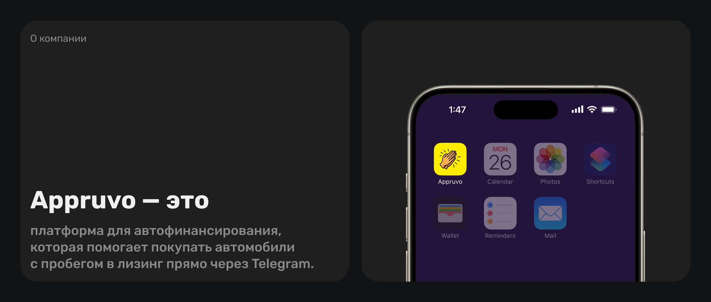
После выдачи автомобиля отношения с клиентом не заканчиваются — наоборот, начинается самый длинный этап его взаимодействия с продуктом. На протяжении всего срока договора клиент регулярно вносит платежи, оплачивает страховки и дополнительные услуги, а со временем может подключать новые продукты: например, пролонгацию, КАСКО или другие сервисы.
При этом внутренняя финансовая модель значительно сложнее, чем должна выглядеть для пользователя. Один платёж может распределяться между лизинговыми компаниями и финансовыми организациями, к нему могут добавляться страховки, штрафы и другие начисления. Если просто перенести эту структуру в интерфейс, клиенту пришлось бы самостоятельно разбираться, кому, сколько и в какой последовательности платить.
Ошибка здесь особенно критична: пропущенный или неверно внесённый платёж может привести к просрочке, штрафам, ухудшению условий программы лояльности и дополнительным обращениям в поддержку.
Для бизнеса этот сценарий также напрямую влияет на выручку и удержание: важно не только обеспечить выполнение обязательных платежей, но и сохранить клиента внутри экосистемы Appruvo, чтобы дальнейшие услуги и продления он оформлял здесь же, а не уходил во внешние каналы.
Спроектировать систему управления финансовыми обязательствами после сделки, которая позволит клиенту быстро понимать, сколько и когда необходимо оплатить, что входит в сумму, есть ли задолженность, какие действия доступны сейчас и как условия договора изменятся в нестандартных ситуациях.
При этом интерфейс должен был учитывать сложную бизнес-логику распределения платежей, не перекладывая её на пользователя.
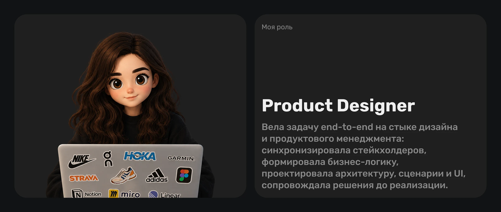
Новая модель платежей должна была упростить клиенту выполнение финансовых обязательств и одновременно сделать платёжный контур Appruvo более управляемым, прозрачным и масштабируемым.
Снизить когнитивную нагрузку в одном из самых чувствительных сценариев продукта: клиенту не нужно разбираться во внутренней структуре обязательств, чтобы понять, сколько и когда платить.
Сократить количество сценариев, требующих ручного сопровождения: разъяснений со стороны поддержки, уточнений по задолженности, переплатам, составу платежа и статусу договора.
Повысить предсказуемость платёжного поведения клиентов и заложить основу для масштабирования продукта: единая логика лучше работает при появлении новых услуг, дополнительных начислений и сложных договорных условий.
На старте задача выглядела локальной: показать клиенту ближайший платёж и дать возможность его оплатить. Но после декомпозиции финансовой модели стало понятно, что за одним пользовательским платежом скрывается сразу несколько обязательств, договоров и правил расчёта.
Сценарий меняется в зависимости от даты, частичной оплаты, просрочки, страховок и условий договора. При этом ошибка пользователя может привести к штрафам, ухудшению платёжной истории или изменению условий программы лояльности.
Главная сложность была не в том, чтобы спроектировать отдельный экран оплаты, а в том, чтобы собрать сложную внутреннюю финансовую систему в понятную и цельную клиентскую модель.
Для бизнеса это разные сущности и правила. Для пользователя — одно обязательство перед Appruvo.
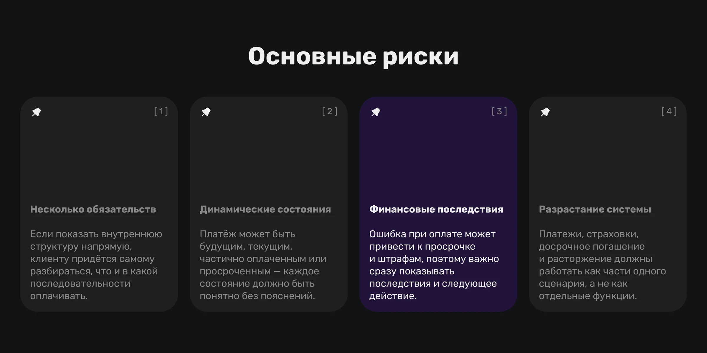
Перед проектированием я разобрала финансовую модель продукта и существующие правила проведения платежей. Вместе с командой фиксировала, какие обязательства существуют, как рассчитывается сумма, в какой последовательности распределяются деньги, что происходит при неполной оплате, когда появляется просрочка и какие последствия она вызывает.
Параллельно изучала паттерны банковских и fintech-продуктов: отображение задолженности, графиков платежей, частичных и досрочных погашений, а также структуры договоров.
Основной фокус был не на визуальных решениях, а на том, какую часть финансовой сложности показывать пользователю, а какую должна брать на себя система.
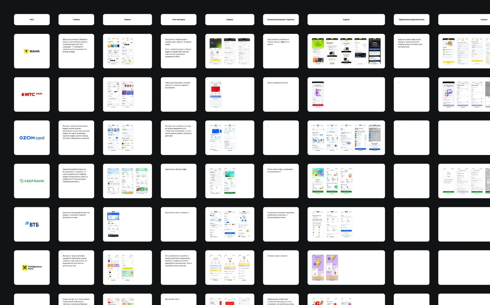
Работа шла в условиях меняющихся бизнес-требований. На старте в продукте уже существовал простой сценарий одного платежа в Appruvo Лизинг, но новая финансовая модель его переросла: появились несколько организаций, разные даты обязательств, дополнительные сервисы и будущая интеграция с Мандарин.
Главный продуктовый вопрос был: нужно ли клиенту управлять каждым обязательством отдельно или эту сложность должна взять на себя система?
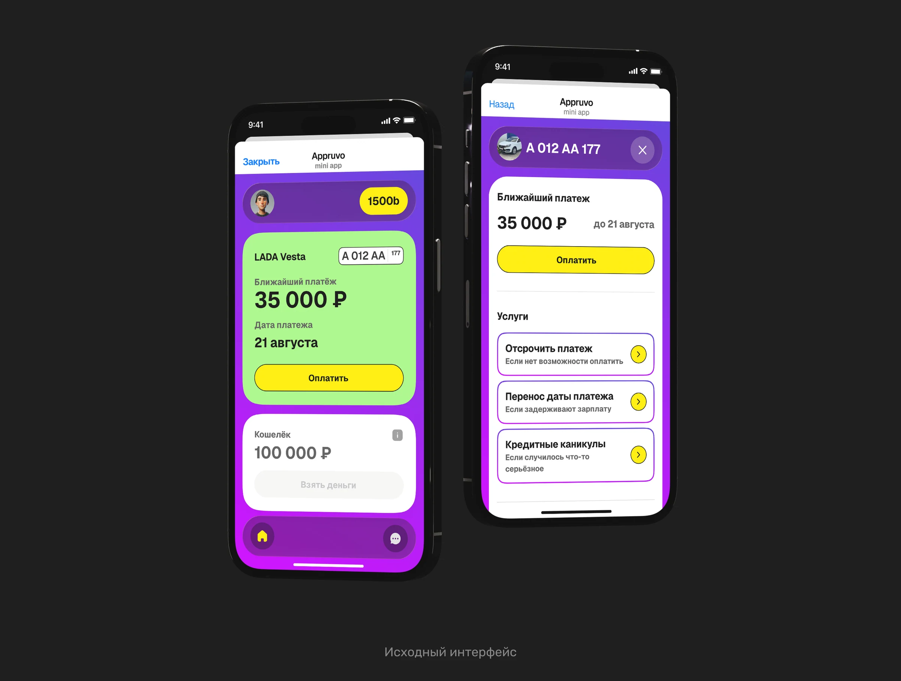
1. Исходный интерфейс
Первый вариант показывал один ближайший платёж и хорошо работал, пока финансовая модель оставалась простой. С появлением новых обязательств он перестал масштабироваться.
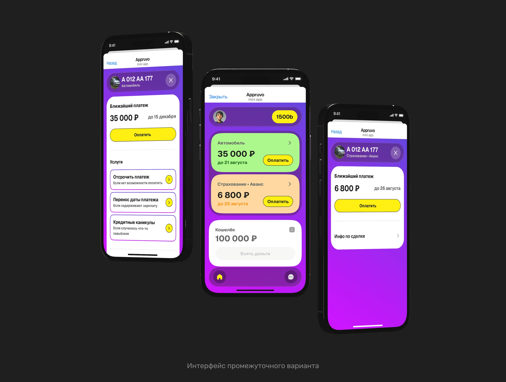
2. Раздельные платежи
Когда требования изменились, мы попробовали показывать обязательства отдельно: кредитор, лизинг и другие платежи.
Так модель становилась прозрачнее, но внутренняя сложность перекладывалась на клиента: ему нужно было понимать, кому, сколько и когда платить, самостоятельно контролировать разные сроки и приоритеты.
Это противоречило основной задаче: сделать регулярную оплату максимально простой и снизить риск ошибок и просрочек.
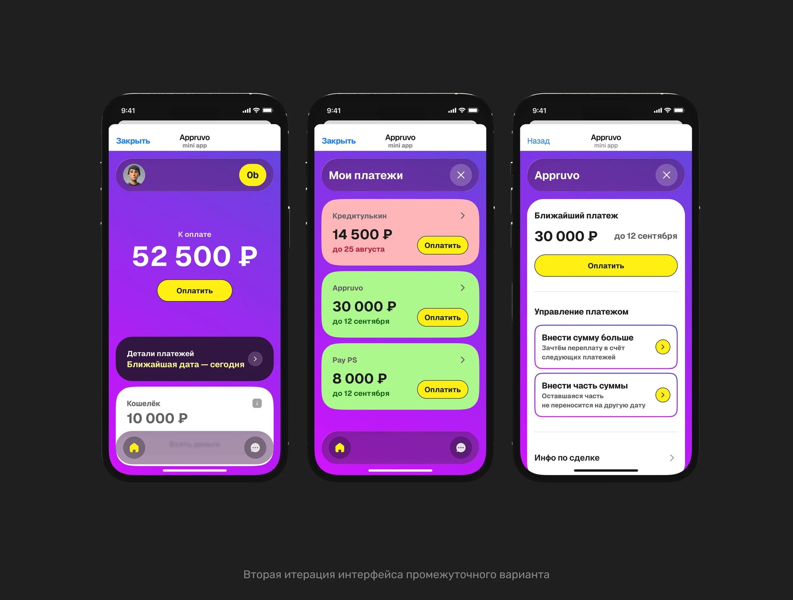
3. Единый платёж
В итоговом решении мы полностью отделили клиентскую модель от внутренней финансовой логики.
Пользователь видит одну сумму, одну ближайшую дату и одно действие — оплатить. При необходимости сумму можно изменить: внести больше или заплатить только часть, если сейчас нет возможности закрыть обязательство полностью.
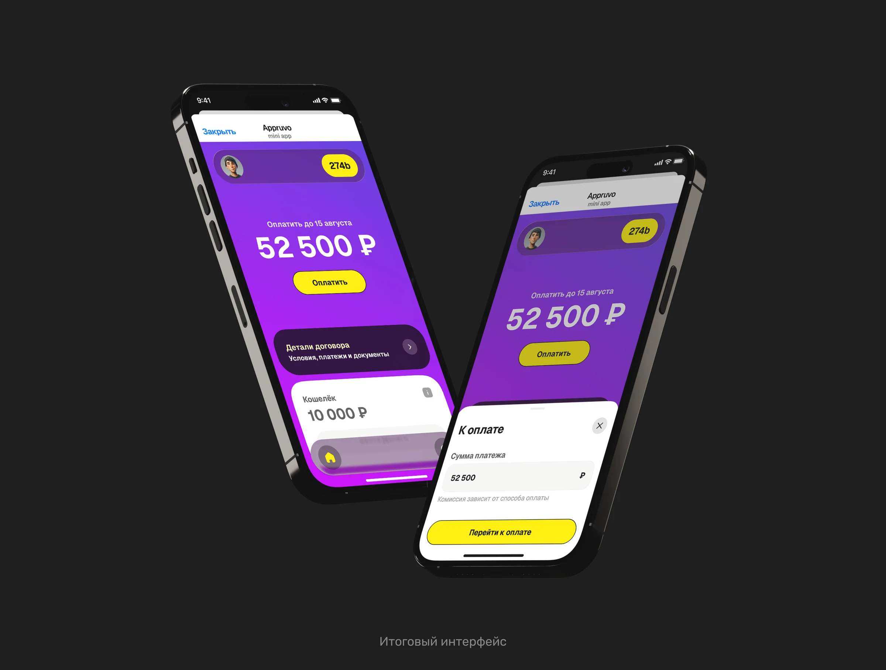
Всё остальное система контролирует сама: распределяет деньги между организациями, учитывает приоритеты и синхронизирует обязательства, даже если их внутренние даты не совпадают.
Пользователю не нужно разбираться и в составе платежа. Финансовая структура упрощается до понятных ему сущностей — графика платежей, условий и документов договора.
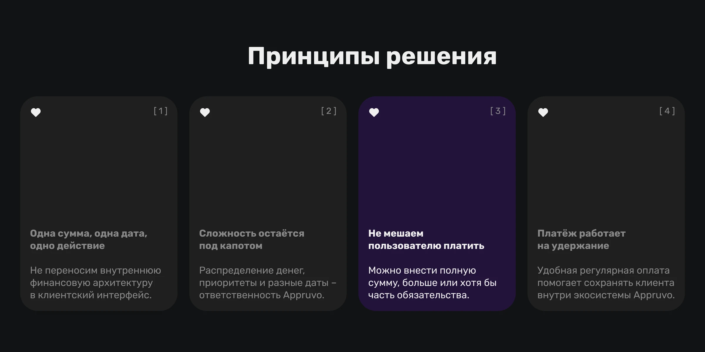
После выбора модели единого платежа я собрала архитектуру раздела и описала сценарии для всего жизненного цикла обязательства — от будущего платежа до просрочки, частичной оплаты и переплаты.
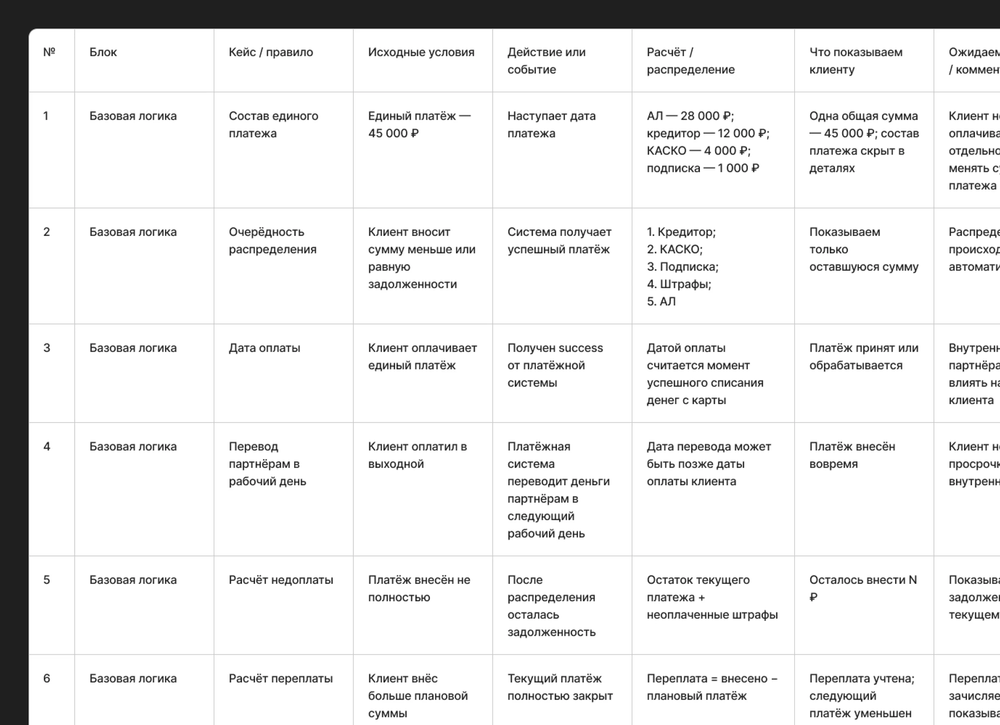
Отдельно вместе с финансистами была заложена логика распределения денег под капотом: пользователь вносит одну сумму, а система сама определяет, какие обязательства и в каком порядке закрывать, учитывая их приоритеты и разные внутренние даты.
Система поддерживает несколько ключевых состояний:
Пользователь может внести часть суммы. Система распределяет деньги, пересчитывает остаток и сохраняет обязательство активным до следующей оплаты.
Текущее обязательство закрывается, а оставшаяся сумма учитывается в следующих платежах.
После наступления даты интерфейс меняет состояние, показывает задолженность и последствия. После погашения пользователь возвращается в актуальный сценарий.
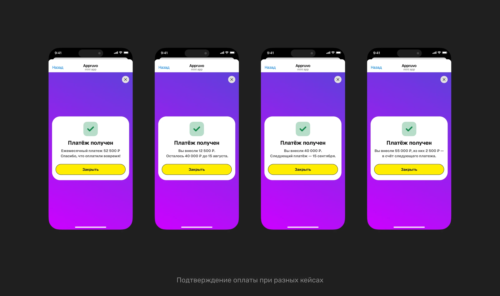
После проработки архитектуры и сценарной логики собрала интерактивный прототип в Codex, чтобы проверить решение целиком до перехода к финальному UI.
На прототипе можно было пройти ключевые сценарии оплаты и увидеть, как новая модель работает в динамике, а не только на отдельных макетах.
Решение вместе посмотрели бизнес, разработка, CIO и CEO: сверили пользовательский сценарий с бизнес-логикой и техническими ограничениями. После согласования модели я перешла к финальной отрисовке интерфейсов и всех необходимых состояний.
В итоговой версии собрала весь постпродажный сценарий вокруг одного понятного обязательства перед Appruvo, а не внутренней структуры договоров и финансовых организаций.
На главном экране приоритет определяется срочностью: просрочено → к оплате сегодня → ближайший → следующий платёж. Пользователь видит одну сумму, одну дату и главное действие, а распределение денег между организациями остаётся внутри системы.
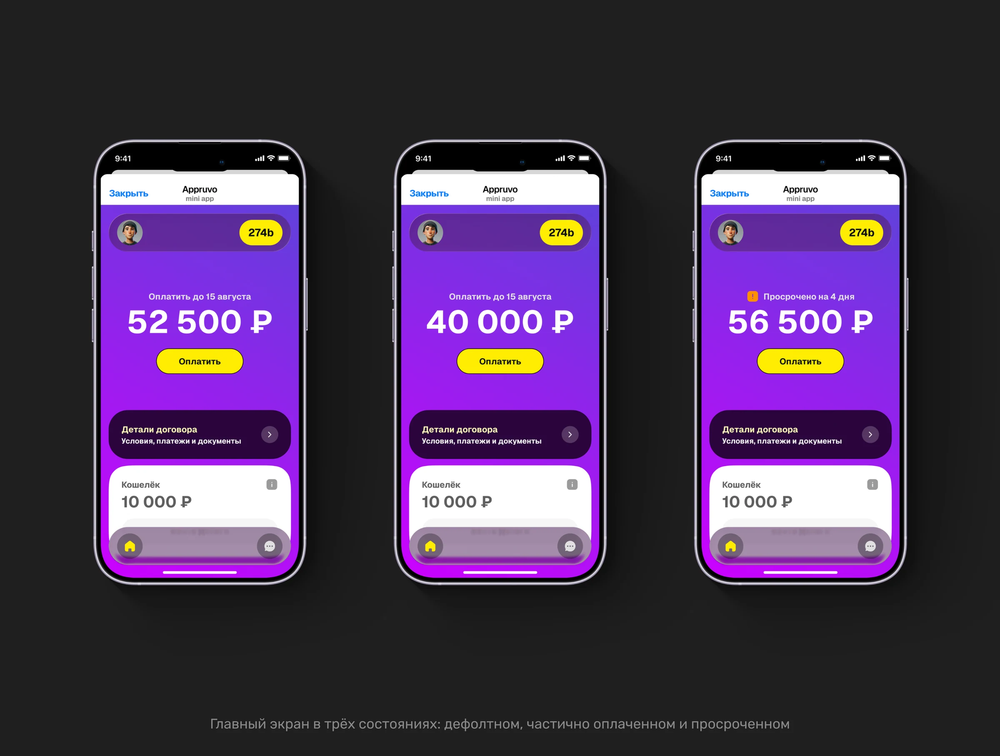
Сценарий оплаты оставила гибким: клиент может внести всю сумму, заплатить больше или только часть. После оплаты интерфейс объясняет результат — сколько осталось внести или как переплата повлияла на следующие обязательства.
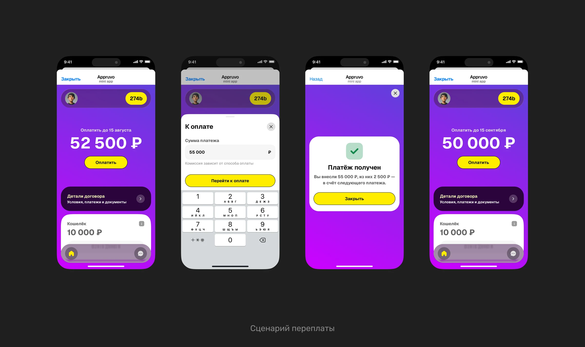
Для просрочки отдельно проработала состояние с обновлённой суммой, последствиями и влиянием на программу лояльности. Задача интерфейса здесь — не давить на пользователя, а быстро объяснить что произошло и что нужно сделать сейчас.
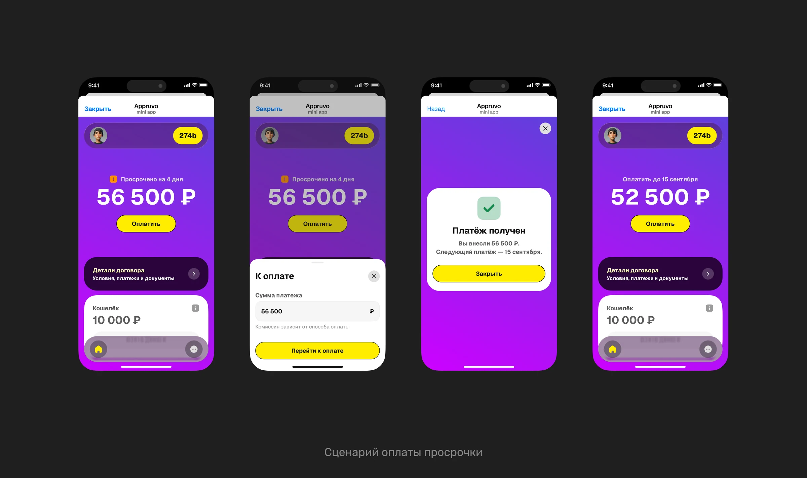
Управление договором пока остаётся на уровне документов и графика платежей. Архитектура при этом предусматривает постепенное добавление самостоятельных действий по мере автоматизации процессов.
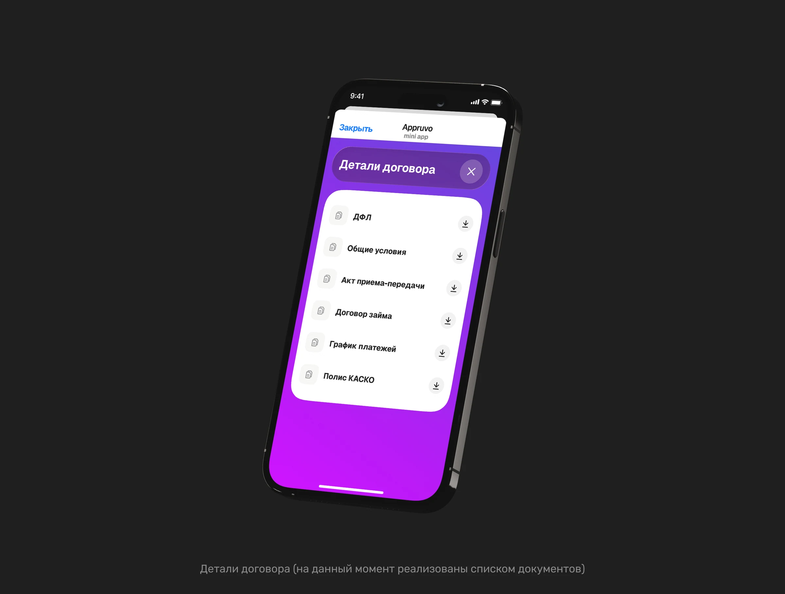
В результате сложная система из нескольких обязательств, сроков и правил распределения для клиента сводится к простой модели: понять текущее состояние → оплатить → увидеть результат → при необходимости обратиться к условиям, графику и документам договора.
В результате сформировала единую платёжную модель для всего постпродажного взаимодействия с клиентом: вместо управления несколькими финансовыми обязательствами пользователь видит одну сумму, одну дату и одно действие. Распределение средств, разные сроки и приоритеты обязательств система контролирует самостоятельно.
Для пользователя
Снизилась сложность регулярного сценария: не нужно разбираться, кому и когда переводить деньги или следить за несколькими обязательствами. При этом клиент может внести полную сумму, заплатить больше или сделать частичную оплату.
Для бизнеса
Платёжный сценарий стал инструментом не только погашения обязательств, но и удержания клиента внутри Appruvo.
Решение должно влиять на:
Для продукта
Архитектура перестала зависеть от количества финансовых организаций и отдельных обязательств. Новые продукты можно подключать под капотом, не усложняя основной пользовательский сценарий.
Это позволяет масштабировать финансовую модель без постоянной перестройки клиентского интерфейса.
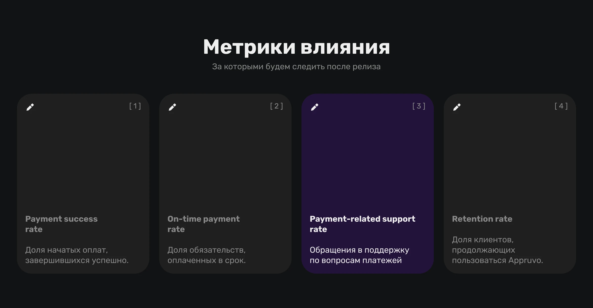
Мой вклад
Вела задачу одновременно как продуктовый дизайнер и продуктовый менеджер — декомпозировала финансовую модель, формировала требования и сценарии, согласовывала решение с CIO, CEO, бизнесом и разработкой и довела его от продуктовой концепции до финального интерфейса.
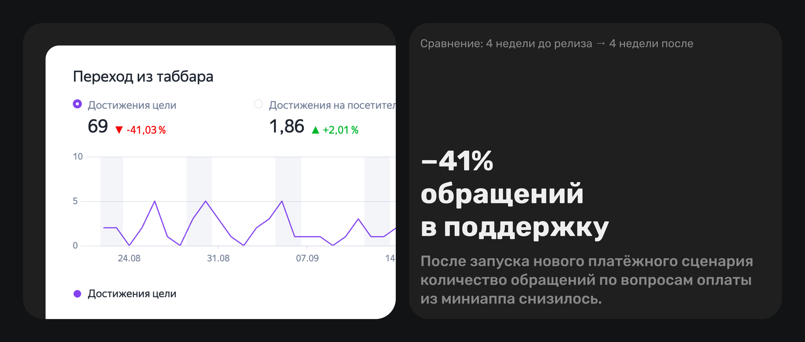
Все права на продукт и визуальные материалы принадлежат ООО "Аппруво Тек" (ИНН 9725174804). Проект опубликован с целью демонстрации дизайнерских решений.